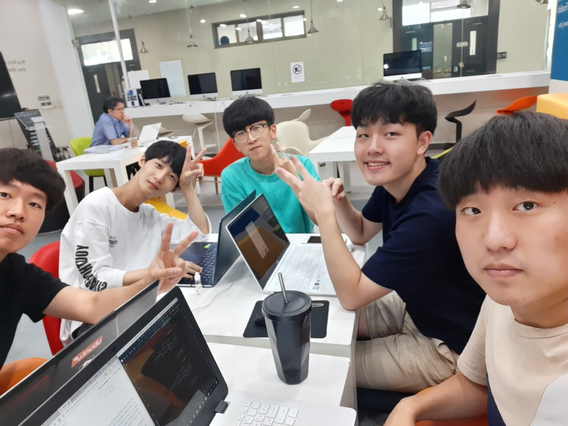

오늘은 다섯번째 모각코를 한 날짜입니다.
오늘은 모든 인원이 함께 모여 코딩을 했어요.
목표 공유와 회고
김경민: Nodejs+MySQL
오늘은 저번시간에 공부한 Node.js의 활용이자 흔히 사용되는 관계형 데이터베이스중 하나인 MySQL을 연동하는 실습을 하였습니다. 다행히 생활코딩 사이트에 이에 대한 강의가 자세히 올라와있어 편하게 공부할 수 있었습니다. MySQL을 이용해 간단한 게시판을 DB와 연동하여 구축해보았습니다.
문영균: 안드로이드 스튜디오를 활용해 로딩페이지 제작 및 레이아웃 수정과 알고리즘제작
오늘은 Bottom Up 프로젝트를 위해 로딩페이지 제작 및 레이아웃 수정과 날씨의 변화에 따른 이미지 변화를 해주는 알고리즘을 만들었습니다.
박재우: 안드로이드 스튜디오를 활용해 로딩페이지 제작 및 레이아웃 수정과 알고리즘제작
오늘은 Bottom Up 프로젝트를 위해 로딩페이지 제작 및 레이아웃 수정과 날씨의 변화에 따른 이미지 변화를 해주는 알고리즘을 만들었습니다.
안준혁: CSS를 이용하여 글자크기 변경 및 색상변경
오늘은 생활코딩의 강의중 하나인 CSS수업을 듣고 직접 웹페이지를 구축해서 그 페이지의 스타일을 변경하는 방법에 대해 배웠습니다. 처음에 Head부분에 style을 모든 파일에 하나하나 써야하나 생각을 했지만 나중에 link stylesheet을 이용해 외부 CSS파일을 불러올 수 있다는 것을 알고 활용했습니다.
유찬희: 안드로이드 스튜디오를 활용해 로딩페이지 제작 및 레이아웃 수정과 알고리즘제작
오늘은 Bottom Up 프로젝트를 위해 로딩페이지 제작 및 레이아웃 수정과 날씨의 변화에 따른 이미지 변화를 해주는 알고리즘을 만들었습니다.